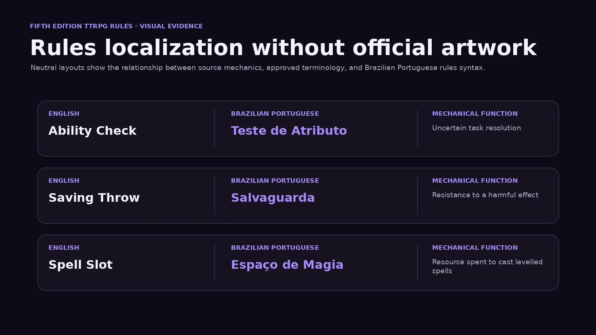
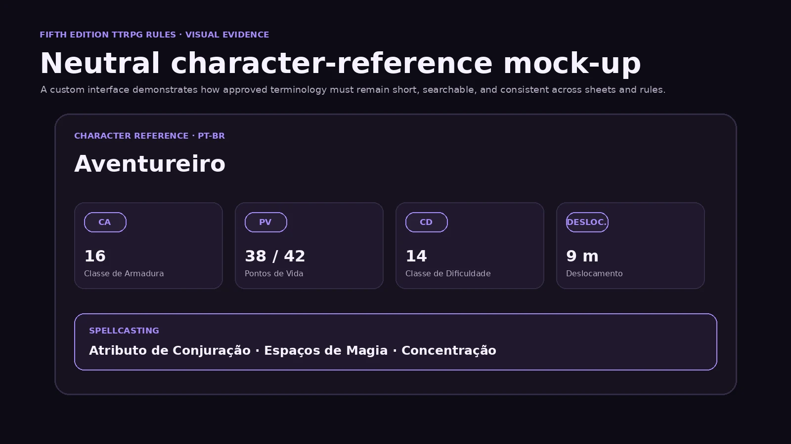

Rules localization case study
Fifth Edition
TTRPG Rules
An English-to-Brazilian Portuguese localization study focused on mechanical precision, established terminology, instructional clarity, metric conversion, and linguistic QA.
Project overview
Rules that remain precise at the table.
This case study presents an independent Brazilian Portuguese localization of selected fifth-edition TTRPG terminology and mechanics.
A rules term may appear in character sheets, spells, combat chapters, stat blocks, conditions, adventures, glossaries, and digital interfaces. A weak translation creates ambiguity across all of them. A strong translation creates a stable concept that players can recognise and reuse.
The work combines mechanical analysis, established Brazilian RPG vocabulary, long-document consistency, player readability, and terminology aligned with public Portuguese-language fifth-edition materials.
Visual evidence
Rules terminology in neutral layouts.
These original mock-ups contain no official D&D artwork, logos, trade dress, or character-sheet design.


My role
Translation, terminology, editing, and QA.
The rules themselves come from the openly licensed SRD. My contribution is the independent Brazilian Portuguese localization and the documented decision-making process.
Localization objectives
Six principles guided the rules language.
Mechanical precision
Preserve triggers, targets, modifiers, durations, thresholds, and optionality.
Player familiarity
Retain established Brazilian terminology where it improves recognition and usability.
Concise instruction
Use direct verbs, short clauses, and visible conditions for fast reference during play.
Concept separation
Keep similar mechanics distinct, including tests, attacks, defences, and spell resources.
Long-form consistency
Use one approved equivalent across chapters, sheets, tables, indexes, and stat blocks.
Spoken usability
Ensure the text remains natural when explained aloud by players and Game Masters.
Core terminology
A controlled rules glossary.
The terminology is organised by mechanical function rather than by isolated dictionary equivalence.
| English | Brazilian Portuguese | Category | Mechanical function |
|---|---|---|---|
| Game Master | Mestre de Jogo | Table role | Describes scenes, adjudicates rules, and determines outcomes. |
| Ability | Atributo | Character system | Core numerical capacity used to resolve actions. |
| Ability Score | Valor de Atributo | Character statistic | Base numerical value of an Attribute. |
| Ability Modifier | Modificador de Atributo | Derived statistic | Number added to relevant rolls. |
| Ability Check | Teste de Atributo | Resolution mechanic | Determines success at an uncertain task. |
| Skill | Perícia | Character system | Specific training associated with an Attribute. |
| Difficulty Class | Classe de Dificuldade | Resolution target | Number a roll must equal or exceed. |
| Saving Throw | Salvaguarda | Defensive test | Attempt to resist or avoid a harmful effect. |
| Attack Roll | Jogada de Ataque | Combat test | Determines whether an attack hits. |
| Proficiency Bonus | Bônus de Proficiência | Derived statistic | Level-based bonus added when proficient. |
| Advantage | Vantagem | Dice mechanic | Roll two d20 and use the higher result. |
| Disadvantage | Desvantagem | Dice mechanic | Roll two d20 and use the lower result. |
| Armor Class | Classe de Armadura | Defence statistic | Target number for an Attack Roll. |
| Hit Points | Pontos de Vida | Survival statistic | Measures capacity to withstand damage. |
| Temporary Hit Points | Pontos de Vida Temporários | Protective resource | Additional points lost before normal Hit Points. |
| Hit Dice | Dados de Vida | Recovery resource | Dice associated with health and recovery. |
| Speed | Deslocamento | Movement statistic | Distance a creature can move. |
| Bonus Action | Ação Bônus | Action economy | Additional action available only when granted. |
| Reaction | Reação | Action economy | Immediate response triggered by an event. |
| Opportunity Attack | Ataque de Oportunidade | Combat reaction | Reaction triggered when an enemy leaves reach. |
| Critical Hit | Acerto Crítico | Combat result | Special hit that increases damage dice. |
| Resistance | Resistência | Damage modifier | Reduces specified damage. |
| Vulnerability | Vulnerabilidade | Damage modifier | Increases specified damage. |
| Immunity | Imunidade | Damage/effect modifier | Prevents specified damage or effects. |
| Short Rest | Descanso Curto | Recovery | Brief period used to recover selected resources. |
| Long Rest | Descanso Longo | Recovery | Extended rest that restores major resources. |
| Spell | Magia | Magic system | Discrete magical effect. |
| Cantrip | Truque | Magic system | Basic spell cast without spending a Spell Slot. |
| Spell Slot | Espaço de Magia | Magic resource | Resource spent to cast levelled spells. |
| Spell Level | Círculo da Magia | Magic classification | Indicates spell power and resource requirement. |
| Spellcasting Ability | Atributo de Conjuração | Magic statistic | Attribute used for spell attacks and DCs. |
| Spell Save DC | CD para Resistir às Magias | Magic defence target | Difficulty Class used to resist a spell. |
| Spell Attack Modifier | Modificador de Ataque de Magia | Magic attack statistic | Modifier added to spell Attack Rolls. |
| Concentration | Concentração | Magic rule | Requirement for maintaining certain spells. |
Condition terminology
Short labels with significant rules impact.
Conditions require especially strict consistency because their full mechanical definitions are reused throughout the system.
| English | Brazilian Portuguese | Mechanical meaning |
|---|---|---|
| Blinded | Cego | Cannot see and is affected by rules involving sight. |
| Charmed | Enfeitiçado | Has restricted hostile interaction with the source. |
| Deafened | Surdo | Cannot hear and fails checks that require hearing. |
| Frightened | Amedrontado | Suffers restrictions while aware of the source of fear. |
| Grappled | Agarrado | Has movement restricted by another creature or effect. |
| Incapacitated | Incapacitado | Cannot take Actions or Reactions. |
| Invisible | Invisível | Cannot be seen without special senses or magic. |
| Paralyzed | Paralisado | Is Incapacitated and suffers severe restrictions. |
| Petrified | Petrificado | Is transformed into a solid inanimate substance. |
| Poisoned | Envenenado | Suffers penalties caused by poison. |
| Prone | Caído | Is lying on the ground and affected by attack and movement rules. |
| Restrained | Contido | Has severely restricted movement and combat effectiveness. |
| Stunned | Atordoado | Is Incapacitated and has reduced ability to defend itself. |
| Unconscious | Inconsciente | Is unaware, Incapacitated, and subject to special attack rules. |
| Exhaustion | Exaustão | Represents cumulative physical or mental deterioration. |
Terminology architecture
Terms organised by mechanical function.
Character statistics
Atributo, Modificador, CA, PV, Deslocamento, Bônus de Proficiência
Stable values displayed on sheets and stat blocks.
Resolution mechanics
Teste de Atributo, Salvaguarda, Jogada de Ataque, CD, Vantagem
Terms that determine how uncertain outcomes are resolved.
Action economy
Ação, Ação Bônus, Reação, Ataque de Oportunidade
Each label identifies what can be done and when.
Spellcasting
Magia, Truque, Espaço de Magia, Círculo, Concentração
Capability, resource, classification, and maintenance remain separate.
Key decisions
Selected terms and rejected alternatives.
Every preferred term is evaluated against mechanical clarity, player familiarity, and long-form consistency.
Ability → Atributo
Selected: AtributoAlternatives: Habilidade, Característica, Capacidade.
Atributo clearly identifies foundational statistics and avoids confusion with learned abilities or class features.
Saving Throw → Salvaguarda
Selected: SalvaguardaAlternatives: Teste de Resistência, Jogada de Salvamento.
Salvaguarda is compact and avoids colliding with Resistência as a damage mechanic.
Speed → Deslocamento
Selected: DeslocamentoAlternatives: Velocidade, Movimento, Distância de Movimento.
Deslocamento describes playable movement distance rather than physical velocity.
Proficiency Bonus
Selected: Bônus de ProficiênciaAlternatives: Modificador de Proficiência, Bônus por Proficiência.
The chosen form is concise, transparent, and familiar to Brazilian fifth-edition players.
Spell Slot → Espaço de Magia
Selected: Espaço de MagiaAlternatives: Carga de Magia, Reserva de Magia, Espaço de Feitiço.
The term preserves the slot-based resource concept and remains distinct from the spell itself.
Spell Level → Círculo da Magia
Selected: Círculo da MagiaAlternatives: Nível da Magia, Grau da Magia.
Círculo prevents confusion between character level and spell classification.
Cantrip → Truque
Selected: TruqueAlternatives: Magia Menor, Magia Básica, Sortilégio Menor.
Truque is short, familiar, and clearly distinct from spells that consume resources.
Restrained → Contido
Selected: ContidoAlternatives: Restrito, Imobilizado, Preso.
Contido communicates severe limitation without incorrectly implying total immobility.
Rules examples
From adapted English mechanics to Brazilian Portuguese.
The examples are independently adapted to demonstrate rules localization without reproducing long source passages.
Ability Check
The condition comes first, and solicitar reads naturally in Brazilian rules language.
Difficulty Class
The sequence uses parallel imperative verbs and preserves dice notation.
Saving Throw
The explanatory register remains separate from direct player instruction.
Attack and Armor Class
Iguala ou supera preserves the exact success threshold.
Advantage
The triggering condition appears first for fast reference during play.
Spell Slots
The translation makes the resource relationship explicit and separates circle from character level.
Concentration
The sentence preserves conditionality and keeps the acting rule concept explicit.
Opportunity Attack
The trigger remains at the end, while Reação and Ataque de Oportunidade stay distinct.
Units and notation
Metric adaptation without breaking the game.
Conversions prioritise consistency with common battle-grid increments rather than scientific precision.
| Imperial source | PT-BR localization | Usage |
|---|---|---|
| 5 feet | 1,5 metro | One common grid square. |
| 10 feet | 3 metres | Two grid squares. |
| 15 feet | 4,5 metres | Three grid squares. |
| 20 feet | 6 metres | Four grid squares. |
| 30 feet | 9 metres | Common character movement. |
| 60 feet | 18 metres | Common spell or sense range. |
Dice notation
d20, d6, 2d8, 1d10 + 3
Standard game notation remains unchanged.
Abbreviations
CA, CD, PV, po
Define abbreviations on first use and reuse them consistently.
Decimal formatting
1,5 metro · 4,5 metres
Brazilian Portuguese uses the decimal comma.
Rules style
Direct language with visible logic.
Instructional verbs
jogue, adicione, escolha, compare, realize, gaste, reduza, recupere
Direct verbs are preferred over heavy nominal constructions.
Rule order
Condition → subject → action → target → result → duration
Players should see when a rule applies before processing its outcome.
Optionality
can / may → pode · must → deve · cannot → não pode
Permission and obligation must never be blurred.
Explicit references
a criatura · o alvo · o conjurador · o atacante
Explicit nouns prevent ambiguous pronoun reference.
Constraints
Localization decisions shaped by system use.
| Constraint | Localization response |
|---|---|
| Terms repeat across hundreds of pages | Maintain a controlled bilingual glossary and reject unapproved variants. |
| Rules are read during play | Use short sentences, visible triggers, and direct verbs. |
| Similar mechanics have different functions | Keep Teste de Atributo, Salvaguarda, and Jogada de Ataque distinct. |
| Character and spell levels can be confused | Use Círculo da Magia for spell classification. |
| English uses imperial units | Convert to consistent, grid-friendly metric values. |
| Terms appear in narrow UI fields | Prefer compact labels such as CA, CD, PV, and Deslocamento. |
| Rules contain exceptions | Keep exception language explicit and close to the rule it modifies. |
| Dice expressions must remain functional | Preserve notation and mathematical operators. |
| Source mixes explanation and instruction | Match the register to the purpose of each passage. |
Quality assurance
Linguistic, mechanical, and terminological review.
Completed checks
- One preferred equivalent per source term
- Approved abbreviations recorded
- Tests, attacks, and defences remain distinct
- Character and spell levels do not overlap
- Success thresholds preserve equal-or-exceed logic
- Optional and mandatory actions remain distinct
- Dice notation remains unchanged
- Metric units use Brazilian formatting
- Portuguese syntax remains natural aloud
Further testing
- Review terms with players from different Brazilian editions
- Test glossary searchability in a complete document
- Localize a full combat chapter
- Localize a complete spell set
- Compare sheet labels with running prose
- Build automated variant detection
- Test metric ranges on printed and virtual maps
Tools and workflow
Built for long-form consistency.
Outcome
A reusable Brazilian Portuguese rules framework.
The terminology system supports character sheets, basic rules, combat chapters, spellcasting, class features, monster stat blocks, adventure instructions, quick-reference guides, and virtual tabletop interfaces.
The case study demonstrates the central challenge of rules localization: the target text must be natural enough for players, precise enough for mechanical use, and consistent enough to survive repetition across an entire system.
Source and licence
Openly licensed source material.
This independent portfolio study is based on the System Reference Document 5.1 by Wizards of the Coast LLC.
The source is available under the Creative Commons Attribution 4.0 International licence. The Brazilian Portuguese localization, terminology analysis, commentary, and presentation are adaptations by Celso Ricardo Correia.
This is independent portfolio work and not an official translation.
Technical documentation
Review the glossary and Markdown case study.
The public repository contains the complete bilingual terminology, localization decisions, QA notes, source information, and version-controlled documentation.